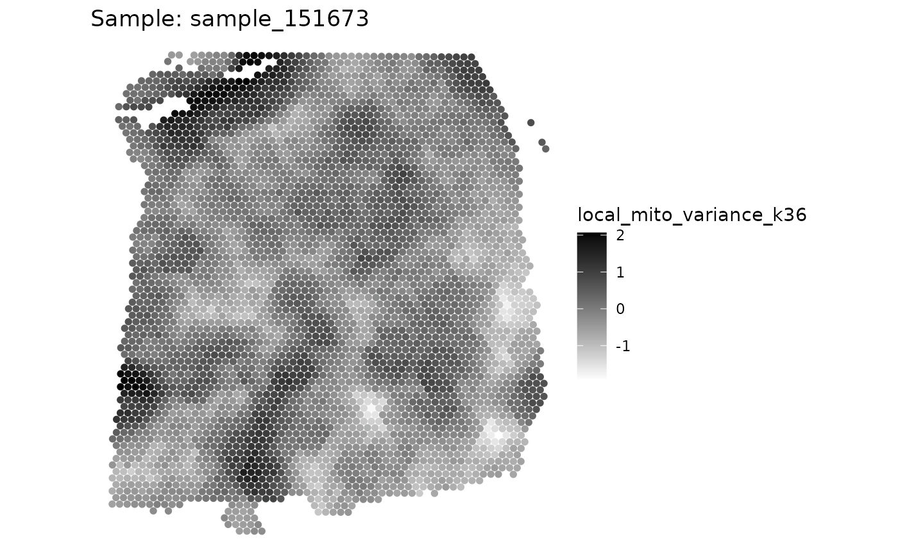

This function does calculates the local variance based on kNN.
Usage
localVariance(
spe,
n_neighbors = 36,
metric = c("expr_chrM_ratio"),
samples = "sample_id",
log = FALSE,
name = NULL
)Arguments
- spe
SpatialExperiment object with the following columns in colData: sample_id, sum_umi, sum_gene
- n_neighbors
Number of nearest neighbors to use for variance calculation
- metric
metric to use for variance calculation
- samples
Column in colData to use for sample ID
- log
Whether to log1p transform the metric
- name
Name of the new column to add to colData
Examples
# for more details see extended example in vignettes
library(SpotSweeper)
library(SpatialExperiment)
library(escheR)
# load example data
spe <- STexampleData::Visium_humanDLPFC()
#> see ?STexampleData and browseVignettes('STexampleData') for documentation
#> loading from cache
# change from gene id to gene names
rownames(spe) <- rowData(spe)$gene_name
# show column data before SpotSweepR
colnames(colData(spe))
#> [1] "barcode_id" "sample_id" "in_tissue" "array_row" "array_col"
#> [6] "ground_truth" "reference" "cell_count"
# drop out-of-tissue spots
spe <- spe[, spe$in_tissue == 1]
spe <- spe[, !is.na(spe$ground_truth)]
# Identifying the mitochondrial transcripts in our SpatialExperiment.
is.mito <- rownames(spe)[grepl("^MT-", rownames(spe))]
# Calculating QC metric for each spot using scuttle
spe <- scuttle::addPerCellQCMetrics(spe, subsets = list(Mito = is.mito))
colnames(colData(spe))
#> [1] "barcode_id" "sample_id" "in_tissue"
#> [4] "array_row" "array_col" "ground_truth"
#> [7] "reference" "cell_count" "sum"
#> [10] "detected" "subsets_Mito_sum" "subsets_Mito_detected"
#> [13] "subsets_Mito_percent" "total"
spe <- localVariance(spe,
metric = "subsets_Mito_percent",
n_neighbors = 36,
name = "local_mito_variance_k36"
)
plotQC(spe, metric="local_mito_variance_k36")
